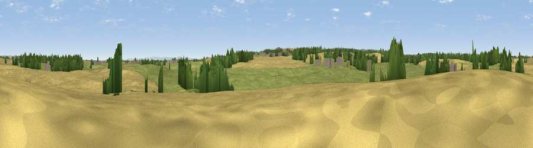

Henah Hill
#34648 in England · top 85% of its area beats it · near Aldbrough St JohnThe view, rendered

A 360° render of this exact spot computed from the terrain model, tree cover and land cover — summer colours, afternoon light, calibrated against photographs of famous viewpoints. Real trees, hedges and buildings will differ in detail.
The panorama
Grey silhouette: terrain skyline in each direction (720 bearings, Earth curvature and refraction included). Dashed green: skyline with trees (+15 m) and buildings (+8 m) as obstacles. Blue strip: how far the ground is visible on each bearing.
Where the view opens
Wedge length = distance to the farthest visible ground on that bearing (vegetation-aware). Rings at 10, 25 and 50 km.
What fills the view
50% grassland · 44% cropland · 6% woodland · 1% built-up
Angular shares of the visible panorama (visual magnitude), not map area. Landscape diversity 0.40 (0–1 Shannon).
Key numbers
More beautiful places nearby
The staircase of upgrades: each row has a higher view potential than everything closer. Driving times are estimates from straight-line distance, calibrated against real road routing — check an actual route before setting out.
| Place | Direction | Drive | Score |
|---|---|---|---|
| Micklow Hill | SE · 3 km | ~7 min | 44.3 |
| Viewpoint near Forcett | WNW · 4 km | ~9 min | 57.8 |
| Diddersley Hill | SSW · 4 km | ~10 min | 67.3 |
| Viewpoint near Kirby Hill | SW · 7 km | ~15 min | 70.4 |
| Viewpoint near Gilling West | SSW · 8 km | ~15 min | 72.3 |
| Viewpoint near Barningham | WSW · 16 km | ~28 min | 72.7 |
| Viewpoint near Barningham | WSW · 16 km | ~29 min | 74.1 |
| Viewpoint near Eggleston | NW · 21 km | ~36 min | 76.0 |
54.50080, -1.70838 · source: osm peak · position refined by local search. Computed location — check access rights before visiting.